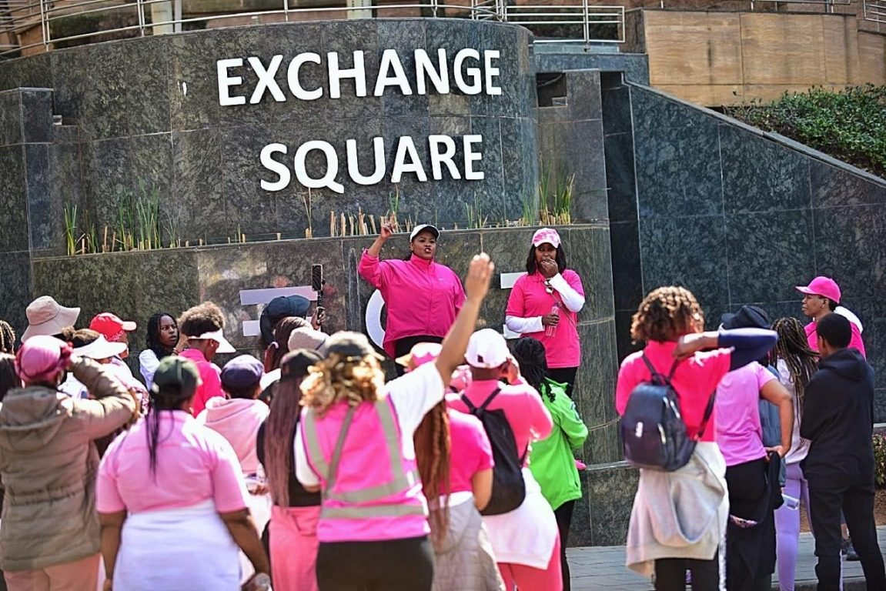
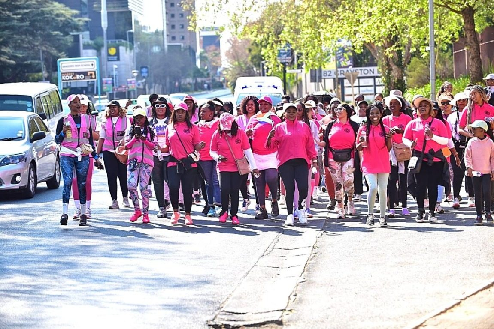
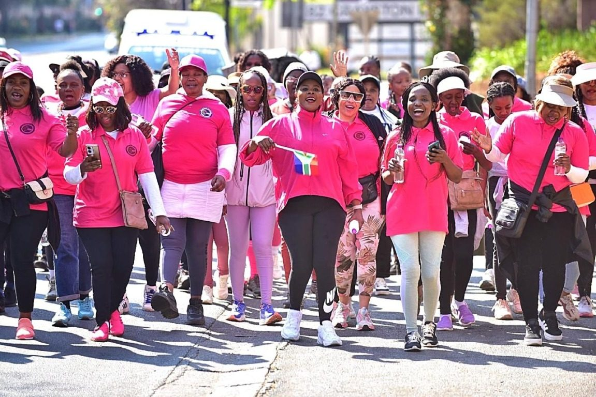

Every August, South Africa observes Women’s Month, remembering the more than 20,000 women who marched to the Union Buildings in Pretoria in 1956 to protest the pass laws. Their courage remains a powerful reminder that women can come together, speak up and stand for change.
Inspired by that legacy, Warrior Women Prayer Movement held a prayer walk through central Sandton in August 2026, during Women’s Month. The women came together to pray for the challenges facing people and families, including rape and gender-based violence, substance addiction, teenage pregnancy and divorce. Their aim was to bring these concerns before God and intercede for the city and the nation.
A walk shaped by prayer
The movement took Jeremiah 1:10 as its guiding scripture: “Today I appoint you to stand up against nations and kingdoms. Some you must uproot and tear down, destroy and overthrow. Others you must build up and plant.”
For the women taking part, the walk was more than a journey through city streets. It was an expression of their belief that prayer can shape the way they respond to the needs of their communities. They prayed for safety, restored families, freedom from harmful influences and opportunities for people to flourish.
Scenes from the Sandton prayer walk



Sandton became a point of focus for prayers reaching beyond the city itself. Along the route, the women stopped at the Johannesburg Stock Exchange (JSE), where they prayed for South Africa’s economy and for the people and businesses connected to it.
The group also prayed for the spiritual life of the city, asking that the values of faith, hope and compassion would take root. Through worship and intercession, they sought to dedicate the streets and the people who live and work there to God.
The prayer walk was a visible act of unity: women standing together, carrying the concerns of their communities in prayer and believing for a better future. Warrior Women continue to encourage women to rise in prayer and to bring their faith into the places where they live, work and serve.